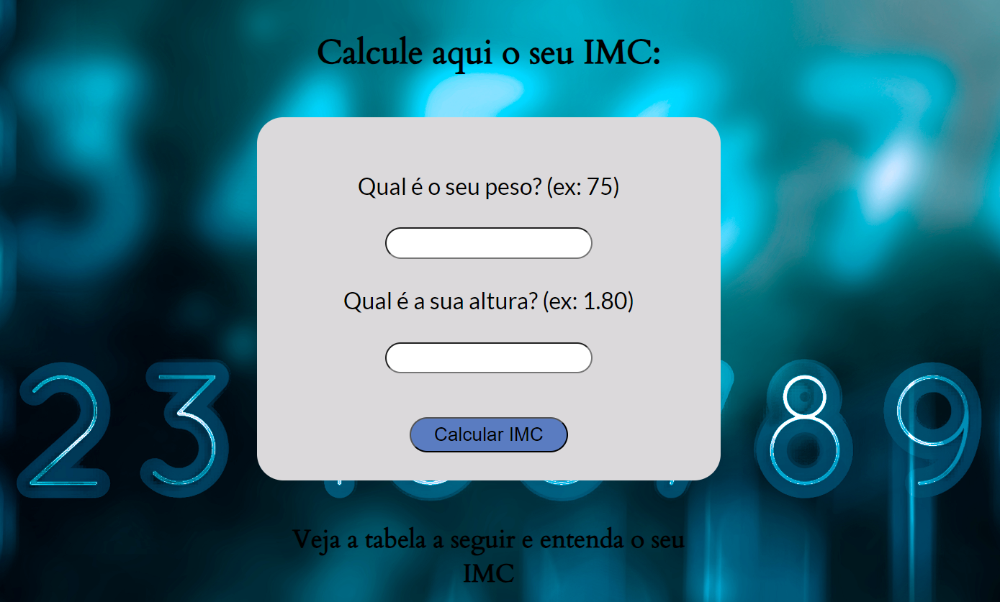
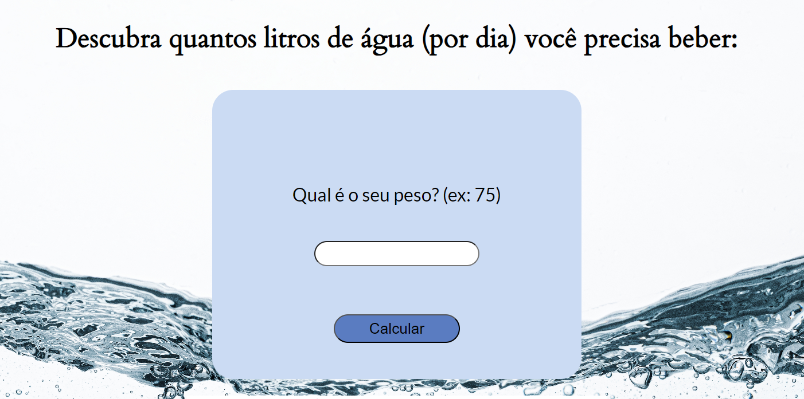

Calculadora de IMC
- 25 de setembro de 2023 -
Projeto desenvolvido com javascript puro que tem a função de calcular o IMC de uma pessoa e dizer qual a classificação do peso, além disso, no final do projeto tem uma tabela para o melhor entendimento da classificação do IMC.
O projeto foi desenvolvido com as seguintes ferramentas:

Calculadora de água
- 30 de setembro de 2023 -
Projeto desenvolvido com javascript puro que tem a função de calcular quantos litros de água de uma pessoa precisa beber diariamente de acordo com o peso, além disso, no final do projeto tem algumas informações importantes sobre o cálculo.
O projeto foi desenvolvido com as seguintes ferramentas: